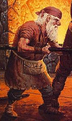

GNOME

Gnomes are a race of small, wiry, but tough creatures. They live a very
long time and accumulate much wisdom. They are resistant to poisons, but
they are vulnerable to bashing because of their small size. Gnomes can see
in the dark with infravision. Gnomes, due to their large stock of wisdom,
always stay neutral, else they will lose their spells and are frowned upon.
The base exp for Gnomes:
Witch = 1300 Cleric = 1300 Thief = 1300 Warrior = 1300
Warlock = 1500